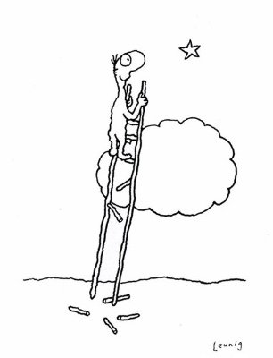

Many years ago I had a young friend who was driving on the highway, arguing with his wife. He pulled over to the side of the road to check on something in his trunk, still arguing all the while. She got out of the car to join him so she could continue the “discussion." And there on the road shoulder, a passing truck hit her and killed her.
Instantly whatever they were arguing about suddenly made absolutely no difference to him at all.
Instantly my friend snapped out of his anger at her, as if he had been driving through a fog and then suddenly came out into the clear day.
And of course once out of his fog he remembered how much he loved her. He was devastated, agonizingly guilty, full of regret.
Like my friend's anger before that truck so painfully and immediately sobered him up, all of us experience a similar fog in the various situations life brings. For most folks, there's a caught-up-in-things sense that whatever is happening to us is ...
Important.
Whether it's big circumstances like death, losing a home to fire, kids taken away, addictions, or whether it's all those countless everyday shouldn't-matter-but-do irritations, humiliations, giggles, tears, pains, loves...
We experience everything as if it matters.
Situations appear to matter. What we think appears to matter. What we feel appears to matter. Every single thing that happens or doesn't happen to us seems to matter.
From our myopic point of view, it is all important, all consuming, all absorbing.
Importance shrouds everything in fog.
Naturally this doesn't feel great.
And though that not-great feeling is also mist, still we might be forgiven for yearning to feel better, or for seeking a clearer experience of life.
Which is why today The Tickler offers the following little mind-game to play. Just for a possible brief break from the clouds.
Starting with the seemingly innocuous question, "Do I want peace?"
"Well of course," the mind instantly says without considering. "Duh."
But... truly? As in, at any cost, any loss of rightness, identity, certainty?
Because all of that stuff maintains fog. There can be no light of day with any of that.
And then we might ask, "Is it possible to find peace right here right now, in these exact circumstances, just as they are?" Even if it feels like there’s something very important going on?
We're just asking if it's possible.
Is it?
If so, and if we're really willing to shed the mist, maybe we can move out of the limitations of mattering...
And just for a little while...
Go bigger.
Whether we call it consciousness or awareness or God or The Universe, we can play with moving attention out from the human drama, to whatever it is that's bigger.
See if "biggerness" holds humans to the same standards that thought does. See if that infuriating political opponent, that scornful person on Facebook, that minus sign on the bank statement, that empty chair across the dinner table, matters from a bigger non-human point of view.
See if whatever is happening is important, from that bigger place.
See if existence requires different experiences, feelings, thoughts.
Might we discover an acceptance of whatever is happening, when we’re not steeped in a blinders-on viewpoint?
Mind-Tickler readers desiring enlightenment might notice the limitations of these small human viewpoints.
Because when we focus on the small, we necessarily miss the big.
Now of course these are just simple questions, nothing complicated, wordy or full of jargony spiritual discourse. No hours of inquiry, meditation or discipline needed.
And who knows? It could turn out that a perspective shift is all it takes to break the spell of thought for a moment.
Because in the end, that's all the fog is anyway. A momentary point of view.
Which is lucky. Because that's much easier to shift than any actual situation.
And might be all we need to avoid the speeding truck.
Not because it’s necessary. But it does feel better.
And no matter what circumstances come down the road, there’s no rule that says we must suffer, here in this brief existence.
Out of the Fog
